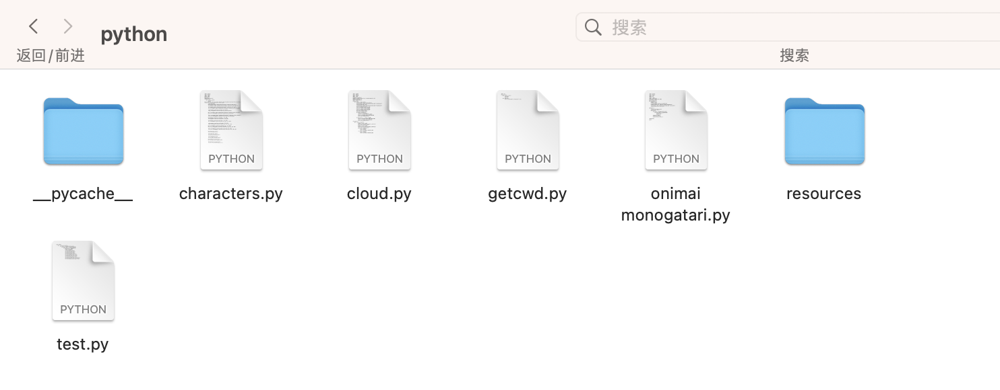
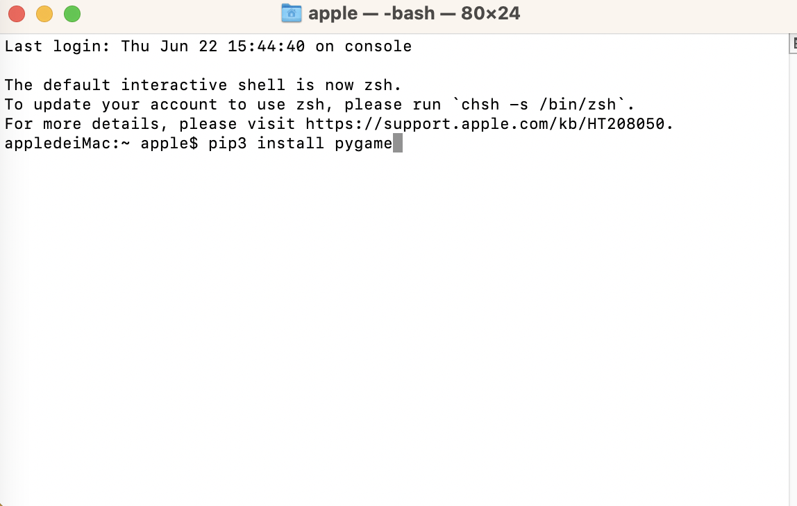
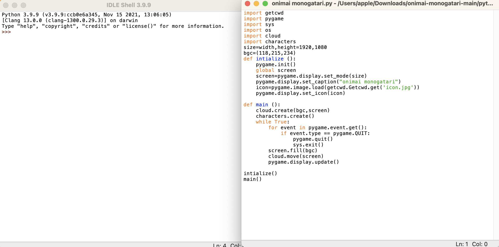

下载onimai monogatari
点击右上方的绿色code按钮
点击Download ZIP
解压

右键onimai monogatari.py（需安装python及pygame）

安装pygame Macos打开终端 WINDOWS打开CMD 如图输入（如pip3不行则输入pip）
要提前安装python3.0.0以上(在python.org官方网址下载)

在IDLE中打开并点击键盘中的F5